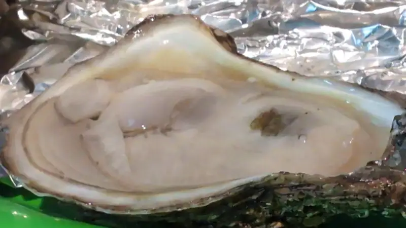
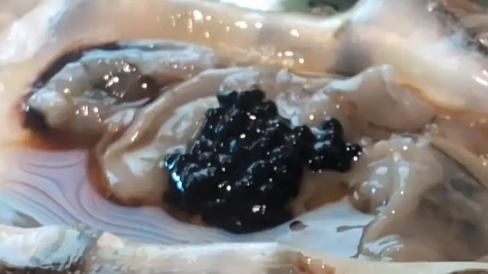
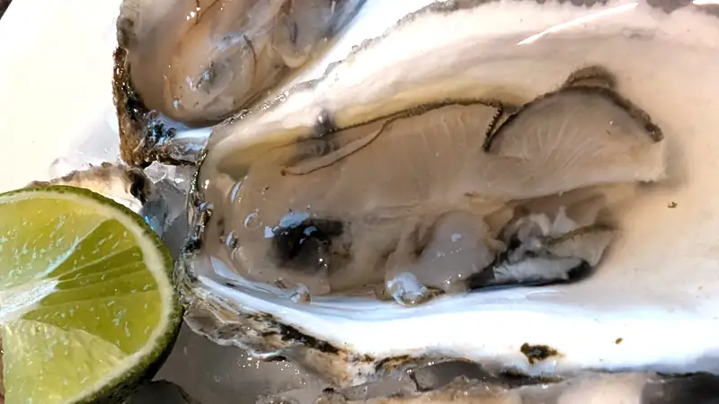
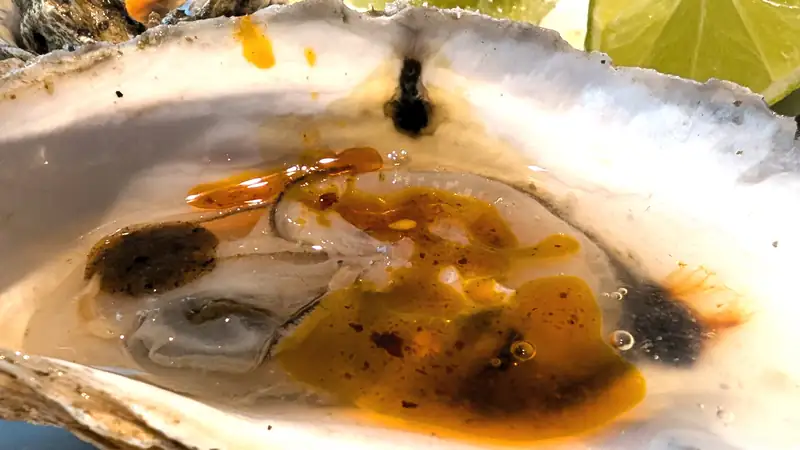

Ostiones
Ostiones, deliciosos bivalvos que o te encantan de que te puedes comer 5 docenas en una sentada, o te causan tal repulsión que no puedes ni verlos en ninguna de sus deliciosas presentaciones. Por... no se, no es suerte, supongo, pero por suerte la señora y yo somos del primer grupo y sí.. si podríamos echarnos varias docenas. Cosa que, cuando leí La fisiología del gusto se me hizo como una proeza imposible lo que contaba de cenas/comidas/banquetes con doce docenas de ostiones; naaa eso es mucho, y digo, para ese entonces si sabía lo que eran y a lo que sabían los ostiones, al menos los de Ensenada. No era muy raro que fuéramos al haliotis y mi apá pidiera una docena y me cayeran un par a mi plato para comer con limón y salsa tabasco. Y luego ya de grande, unos shots de ostión en el barra azul, y después en aquella salida en el Nérida. Y bueno, pues estos vienen... no, no a cortesía, pero sí gracias a una oferta que tiene Whole Foods para los miembros de Amazon Prime: en la compra de una docena o más de ostiones, salen a $1 la pieza. Y sí, tienen unos que son de pesca salvaje y están a $1 la pieza, y son del golfo de México; esos... ah.. eso estarían pocamadre en un coctel porque no tienen mucho mucho sabor, pero sí tienen mucha carne y mucho licor, como dicen los gringos, ese caldito que les sale cuando los desconchas. Y otra de las variedades que venden aquí en el área de Dallas, es el Atlantic blue point que es de cultivo, mucho más limpia la concha y con mucho sabor la carne del ostión, aunque sea de menor tamaño.
{kind=link}

Lo mejor de tener X cantidad de pequeños platillos es que tienen en cada uno toda una gama de posibilidades para prepararlo, desde el ya-descrito limón y tabasco, valentina/amor y limón.. un método favorito en Ensenada, o no se, te vuelves loco, encuentas caviar (aunque sea de algas), un chorrito de vinagre de arroz, soya y.. p'a dentro!
{kind=link}

Y nah, pues, uno siempre regresa a sus raíces. Limón y salsa picante, aunque sea de la marisquera y unas gotas de salsa maggi... IN!
{kind=link}

Y claramente, si tenemos de la salsa tatemada, pues unas gotas del aceite de esa salsa p'a que enchile!
{kind=link}
